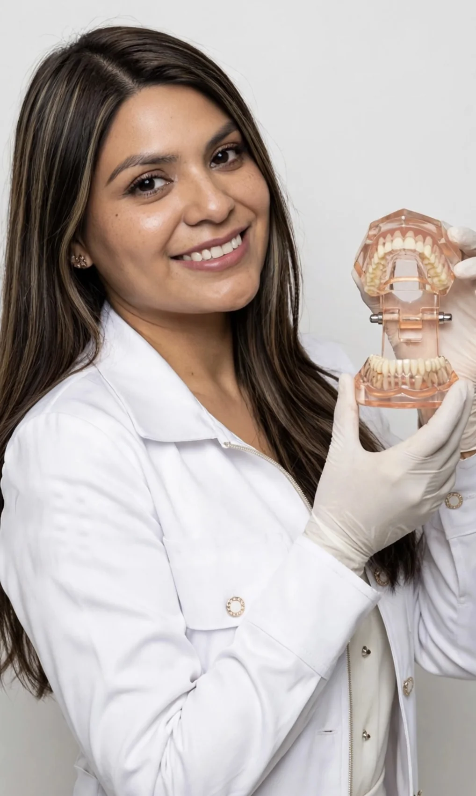
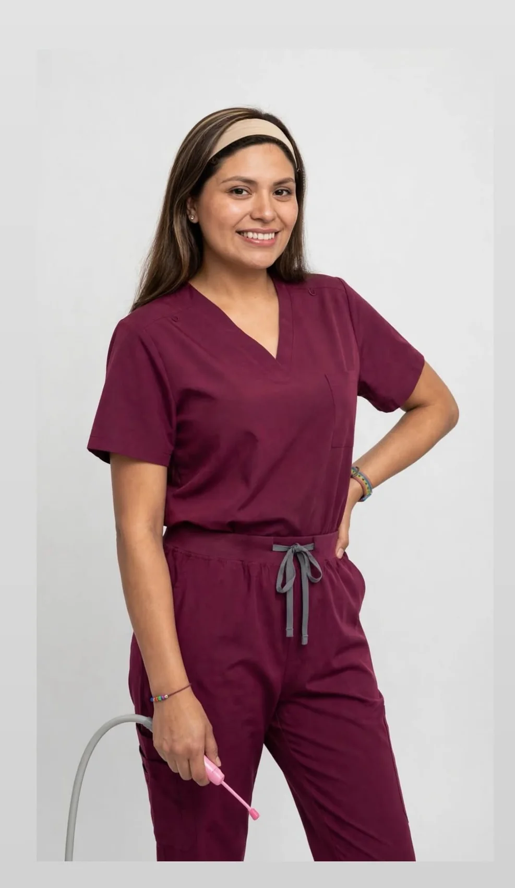
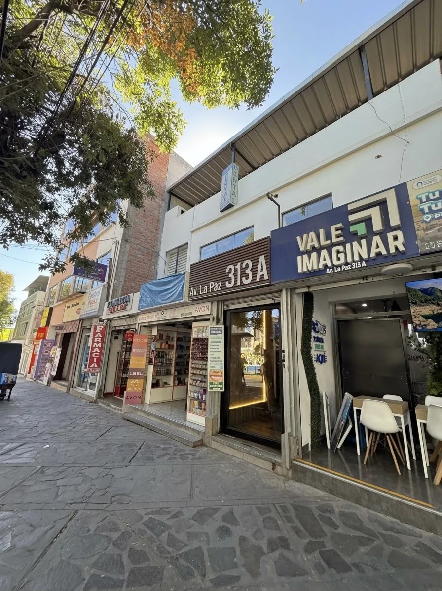

ODONTOLOGÍA CON CALIDEZ · AREQUIPA
Tu sonrisa merece
el mejor cuidado.
Atención odontológica personalizada en Arequipa
Un trato cercano, una atención a tu medida y el tiempo que tu sonrisa necesita.

Te acompañamos a ti.

DRA. DANIKA CAMA PALOMINO 01 / CONÓCEMEDETRÁS DE CADA SONRISA
Una atención que
empieza por escucharte.
Soy la Dra. Danika Geraldine Cama Palomino, cirujana dentista, COP 62275.
Mi formación en Odontología en la Universidad de San Martín de Porres y mi internado en el Hospital Militar III DE de Arequipa son parte del camino que me ha acercado al cuidado de la salud bucal.
Continúo mi formación a través de cursos y encuentros académicos. En el consultorio, quiero que te sientas escuchado y puedas conversar con tranquilidad sobre el cuidado de tu sonrisa.
Conoce mi formaciónFORMACIÓN Y CREDENCIALES
Confianza con
respaldo profesional.
Formación académica, colegiatura y actualización continua, presentadas a partir de la documentación proporcionada.
La vigencia indicada corresponde a la constancia de habilitación adjunta, emitida el 13/03/2026; no constituye una verificación en tiempo real. Los cursos y actividades académicas no se presentan como títulos de especialidad.
CUIDADO PARA CADA ETAPA
Tu sonrisa, en buenas manos.
Conoce tu motivo de consulta. La atención comienza con una evaluación para conversar sobre las opciones adecuadas para ti.
NUESTRO CONSULTORIO
Un espacio pensado
para tu comodidad.
Conoce el lugar donde te recibimos: el área de atención, la recepción y nuestra sala de espera en Arequipa.
GALERÍA PROFESIONAL
Conoce a tu doctora.
Una mirada más cercana a la Dra. Danika y su espacio de atención.
DEMOS EL PRIMER PASO
Tu próxima sonrisa
empieza aquí.
Cuéntanos cuándo te gustaría visitarnos. Prepararemos tu solicitud para que puedas enviarla por WhatsApp.
+51 926 388 546La fecha y hora son preferencias. Tu cita queda sujeta a confirmación del consultorio.
TE ESPERAMOS EN AREQUIPA
Más cerca de
tu sonrisa.
Av. La Paz 313 AArequipa, Perú
Referencia: frente a la Fiscalía.Cómo llegar

AV. LA PAZ 313 A · AREQUIPA